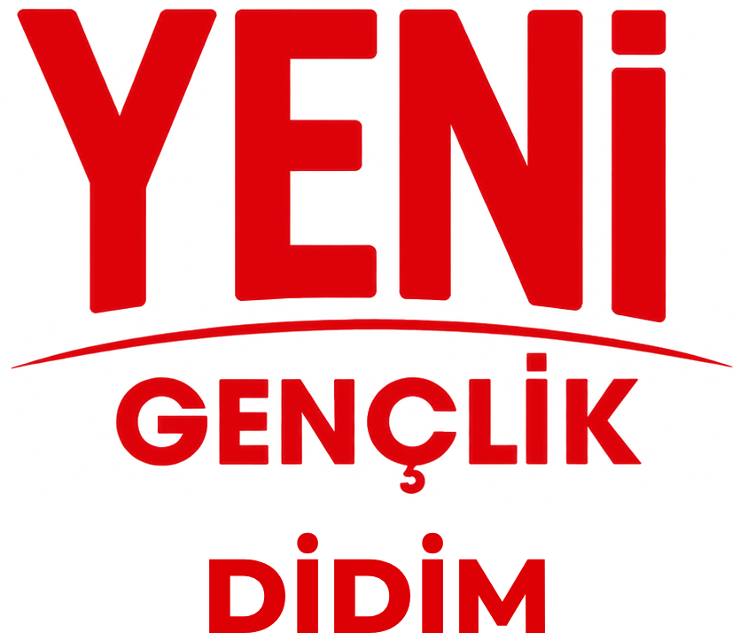

2027 Yıllık
Çalışma Planı
Yeni Parti Didim Gençlik Kolları · Taslak
Gençlik Kolları Yönetmeliği md. 19 ve 22 uyarınca

Didim Gençlik Kolları Başkanı
Bu belge taslaktır. Yönetmeliğe göre yıllık çalışma planı her Aralık ayında hazırlanır ve il gençlik kolu başkanlığına iletilir. Taslak, ilçe gençlik kolu yönetim kurulunda görüşülüp kesinleştirilmeli; ilçe başkanlığının görüşü alınmalı ve il gençlik kolunun planıyla uyumu kontrol edilmelidir. Rakamsal hedefler öneri niteliğindedir.
1. Bugünkü durum (Kasım 2026)
| Gösterge | Durum | Not |
|---|
| Genç üye (30 yaş dahil) | 241 | İlçedeki 4.511 üyenin %5,3'ü |
| Kadın genç üye | 61 (%25) | Erkek 180. Cinsiyet dengesi zayıf. |
| Genç üyesi olan mahalle | 16 / 16 | Yoğunluk: Yeni Mah. 55, Efeler 42, Cumhuriyet 41, Hisar 30 |
| Öğrenci genç üye | 8 | En büyük boşluk. Üye kaydında meslek bilgisi "öğrenci" olanlar. |
| Eğitim durumu | Lise 106, lisans 51, ön lisans 39, ortaokul 35, yüksek lisans 7 | Çoğunluk çalışan genç (işçi, usta, şoför, büro). |
Tablodan çıkan sonuç: Didim'deki genç üyelerimizin çoğu çalışan gençler. Öğrenci ve kadın genç üye sayısı düşük. 2027 planı bu iki boşluğu kapatmaya ve genç üye sayısını artırmaya odaklanıyor.
2. 2027 hedefleri
| Hedef | Bugün | 2027 sonu | Kaynak |
|---|
| Genç üye sayısı | 241 | 400 | md. 6/a, 24/5 |
| Kadın genç üye oranı | %25 | %35 | md. 15 |
| Öğrenci genç üye | 8 | 50 | md. 6/g |
| Birim sorumlusu olan mahalle | Belirlenecek | 16 / 16 | md. 6 |
| Yönetim kurulu toplantısı | | En az 24 | md. 17 |
| Zamanında gönderilen aylık rapor | | 12 / 12 | md. 19 |
| İlçe danışma toplantısı | | 2 | md. 20 |
| Eğitim programı | | 10 oturum | md. 6/d |
| Kotaya hazır genç isim havuzu | | En az 10 kişi | Tüzük md. 36 |
3. Çalışma grupları
Yönetim kurulunun 10 üyesi aşağıdaki alanlara dağıtılır. Her grup kendi alanında mahalle birim sorumlularıyla çalışır ve aylık rapora bir paragraf katkı verir. md. 6/f, 6/h, 14
| Grup | Sorumluluk | Sorumlu |
|---|
| Örgütlenme ve üyelik | Mahalle birim sorumluları, üye kaydı, genç üye hedefi | ……………… |
| Medya ve iletişim | Sosyal medya, görseller, kurumsal kimlik, basın | ……………… |
| Eğitim ve Ar-Ge | Eğitim takvimi, okuma grupları, raporlar | ……………… |
| Eylem ve etkinlik | Anma ve kutlama günleri, saha etkinlikleri | ……………… |
| Kampüs ve öğrenci | Üniversite, meslek yüksekokulu ve liseden yeni mezun gençler | ……………… |
| Çalışan gençler ve ekonomi | Genç işsizliği, turizm ve mevsimlik işçilik, işçi hakları | ……………… |
| Kadın ve eşitlik | Genç kadın üyeler, kadın kollarıyla ortak çalışma | ……………… |
| Ekoloji, kültür ve spor | Kıyı ve çevre, kültür-sanat, spor etkinlikleri | ……………… |
| Hukuk ve seçim | Sandık örgütlenmesi, seçim eğitimi, gençlik kotası | ……………… |
4. Dönem dönem plan
Ocak - Mart
- Görev dağılımı ve çalışma gruplarının kurulması
- 16 mahalle için birim sorumlusu belirlenmesi
- Eğitim 1-3: Tüzük ve program, kurumsal kimlik ve sosyal medya, kamuya konuşma
- 24 Ocak Uğur Mumcu, 6 Şubat deprem anması, 8 Mart, 18 Mart
Nisan - Haziran
- 19 Mayıs Gençlik Haftası: yılın ana etkinliği
- Kampüs tanışma buluşmaları, öğrenci üye kampanyası
- 23 Nisan, 1 Mayıs, 13 Mayıs Soma, 5 Haziran Çevre Günü
- 1. İlçe danışma toplantısı ve sonuç raporu (Haziran)
Temmuz - Eylül
- Turizm sezonunda çalışan gençlerle buluşmalar
- 12 Ağustos Uluslararası Gençlik Günü
- 7 Eylül Aydın'ın kurtuluşu, 30 Ağustos
- Eylül: ilçe bütçesine gençlik kolu görüşü (%10 pay)
Ekim - Aralık
- 29 Ekim, 10 Kasım, 24 Kasım, 25 Kasım
- Kotaya hazır genç isim havuzunun tamamlanması
- 2. İlçe danışma toplantısı ve sonuç raporu
- Aralık: 2028 yıllık planı ve bütçesi, yıl sonu faaliyet değerlendirmesi
5. Eğitim programı
| # | Konu | Ne zaman |
|---|
| 1 | Tüzük, program ve gençlik kolları yönetmeliği | Ocak |
| 2 | Kurumsal kimlik, sosyal medya ve paylaşım kuralları | Şubat |
| 3 | Kamuya konuşma ve basın açıklaması | Mart |
| 4 | Kapı kapı saha çalışması ve üye kazanma | Nisan |
| 5 | Etkinlik planlama ve gönüllü yönetimi | Mayıs |
| 6 | Yerel yönetimler ve belediye bütçesi okuma | Haziran |
| 7 | Genç işsizliği ve çalışma hakları | Eylül |
| 8 | Sandık görevliliği ve seçim güvenliği | Ekim |
| 9 | Kadın ve genç temsili, kotalar | Kasım |
| 10 | Yıl değerlendirmesi ve 2028 planı atölyesi | Aralık |
6. Toplantı ve raporlama takvimi
| Ne | Sıklık | Kime | Kaynak |
|---|
| Yönetim kurulu toplantısı | 15 günde bir (yılda 24) | Karar defteri | md. 17-18 |
| Aylık çalışma raporu | Her ayın ilk 10 günü | İl gençlik kolu | md. 19 |
| İlçe yönetim kurulu toplantıları | İlçe takvimine göre | Bilgi ve görüş (oysuz) | md. 6 |
| İlçe danışma toplantısı | Haziran ve Aralık | İl gençlik kolu (sonuç raporu) | md. 20 |
| Üç aylık değerlendirme | Nisan, Temmuz, Ekim, Ocak | İl'den gelir, yönetimde görüşülür | md. 19 |
| Yıllık plan ve bütçe | Aralık | İl gençlik kolu | md. 19, 22 |
7. Bütçe taslağı
Yönetmeliğe göre gençlik kolunun yıllık bütçesi bu planla uyumlu hazırlanır; harcamaları ilçe saymanı yapar. Tutarlar ilçe başkanlığının ayıracağı paya göre doldurulacak. md. 22, Tüzük md. 60
| Kalem | Kapsam | Tahmini tutar |
|---|
| Etkinlikler | 19 Mayıs, 12 Ağustos, anma ve kutlama günleri | ……………… TL |
| Eğitim | 10 oturum: salon, ikram, eğitmen ulaşımı | ……………… TL |
| Basılı materyal | Broşür, afiş, üyelik formu, rozet | ……………… TL |
| Dijital | Sosyal medya tanıtımı, tasarım araçları | ……………… TL |
| Saha ve ulaşım | Mahalle ve köy ziyaretleri, il toplantılarına katılım | ……………… TL |
| Diğer | Beklenmeyen giderler | ……………… TL |
| Toplam | | ……………… TL |
8. Riskler ve önlemler
- Sosyal medya kısıtlamaları: Facebook sayfasındaki kısıtlama gibi durumlara karşı birden fazla resmi kanal ve sahada yüz yüze iletişim. Paylaşımlarda tüzük ve kurumsal kimlik kurallarına uyum.
- Yaz sezonunda katılımın düşmesi: Turizmde çalışan gençler için akşam saatlerinde kısa buluşmalar.
- Raporların aksaması: Her çalışma grubu ayın son haftası katkısını sekretere iletir.
- 31 yaşını dolduran yöneticiler: Görev dönem sonuna kadar sürer, ama yerine yetişecek isimler önceden hazırlanır. md. 3
Hazırlayan
Buğra Behrenk
Yeni Parti Didim Gençlik Kolları Başkanı
Yönetim kurulunda görüşülme tarihi ve karar no
……………………………………